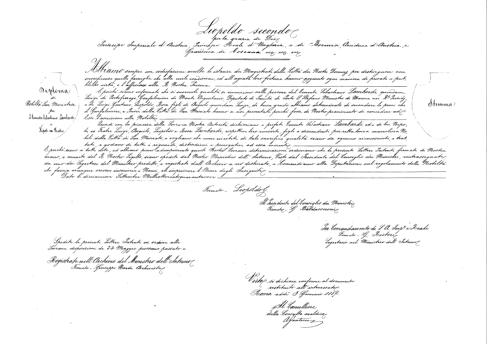

| Costituzione Italiana Disposizioni transitorie e finali Wikisource |
Constitution of Italy Transitory and Final Provisions Wikisource |
|---|---|
| XIV | XIV |
| I titoli nobiliari non sono riconosciuti. | Titles of nobility shall not be recognized. |
| I predicati di quelli esistenti prima del 28 ottobre 1922 valgono come parte del nome. | The predicates of those existing before 28 October 1922 shall serve as part of the name. |
| [...] | [...] |
| La legge regola la soppressione della Consulta araldica. | The law shall regulate the suppression of the Heraldic Council. |

| Diploma di nobiltà San Miniatese per il tenente Sebastiano Lambardi e nipoti ex fratre | Certificate of nobility in San Miniato for lieutenant Sebastiano Lambardi and his nephews |
|---|---|
| Leopoldo II per la grazia di Dio principe imperiale d'Austria, principe reale di Ungheria e di Boemia, arciduca d'Austria, granduca di Toscana, etc, etc, etc [sic!] | Leopold II, the by-grace-of-God imperial prince of Austria, royal prince of Hungary and Bohemia, archduke of Austria, grand duke of Tuscany, et cetera, et cetera, et cetera [sic!] |
| Abbiamo sempre con soddisfazione accolto le istanze dei magistrati delle città dei nostri dominii per distinguere con onorificenze quelle famiglie che alla civile condizione ed all'agiata loro fortuna hanno aggiunto ogni maniera di private e pubbliche virtù e l'affezione alla r[egale] nostra persona. | We always listen with satisfaction to applications made by the magistrates of our cities and territories, who ask us to award honors to the families who foster the general welfare with both public and private virtues and their reverence to our regality. |
| E poiché siamo informati che sì onorevoli qualità si riuniscono nelle persone | We have been informed that such honorable qualities are blended into the persons of |
| del tenente Sebastiano Lambardi quondam Luigi di Portoferraio, gonfaloniere di Monte Argentario, deputato di sanità di Porto Santo Stefano, ministro di marina nei r[ega]li presidii | lieutenant Sebastiano di Luigi Lambardi from Portoferraio, gonfalonier of Monte Argentario, port chief medical officer of Porto Santo Stefano, Minister of Navy in the Presidi |
| e di Luigi Gaetano, Leopoldo, Rosa figli di Angiolo quondam Luigi, | and Luigi Gaetano, Leopoldo and Rosa, the offspring of Angiolo di Luigi, |
| di buon grado abbiamo determinato di secondare le preci che il gonfaloniere e priori della città di San Miniato hanno a noi presentate perché fosse di nostro piacimento di concedere ad essi l'iscrizione alla nobiltà. | so we decided to second the recommendation by the gonfalonier and the aldermen of the city of San Miniato and award them with nobility. |
| Quindi con la pienezza della sovrana nostra autorità dichiariamo | Hence, by our full and sovereign authority, we award |
| i prefati [sopra citati] tenente Sebastiano Lambardi e i di lui nipoti ex fratre Luigi, Angiolo, Leopoldo e Rosa Lambardi, rispettive loro consorti, figli e discendenti per retta linea mascolina | the aforementioned lieutenant Sebastiano Lambardi and his nephews Luigi di Angiolo, Leopoldo and Rosa Lambardi, and their wives and sons and their male line |
| nobili della città di San Miniato e vogliamo che come rivestiti di tale onorifica qualità siano da ognuno riconosciuti e trattati e godano di tutti i riguardi, distinzioni e prerogative ad essa inerenti. | with the nobility in the city of San Miniato and we wish them to be taken into consideration and treated and regarded and distinguished and empowered according to such an honorable title. |
| E perché siano a tutti note, ed abbiano pieno adempimento queste nostre sovrane determinazioni, [noi] ordiniamo che le presenti lettere patenti firmate a mano e munite del r[egale] nostro sigillo siano spedite dal nostro ministero dell'interno, viste dal presidente del consiglio dei ministri, contrassegnate da uno dei segretari del ministero predetto e registrate dall'archivio a ciò destinato, e comandiamo alla deputazione sul regolamento della nobiltà che faccia ovunque occorre inscrivere i nomi ed imprimere l'arma degli insigniti. | In order to make such regal decisions known to anyone and fully carried on, we order that these certificates, signed by hand, with our royal seal, are to be dispatched by our ministry of interior, marked by one of the secretaries of such ministry, seen by the president of the council of the ministers, and registered to the proper archive and we order the heraldic council to display the names and the coat of arms of such people wherever necessary. |
| Dato lì 19 settembre 1849 | September 19, 1849 |
| Firmato - Leopoldo S[econdo] | Leopold II |
| Il presidente del consiglio dei ministri | President of the council of the ministers |
| Firmato - G[iovanni] Baldasseroni | G[iovanni] Baldasseroni |
| Per comandamento di s[ua] a[ltezza] imp[eria]le e reale | Upon the order by his royal and imperial highness |
| Firmato - G. Ristori [?] | G. Ristori [?] |
| Segretario nel ministero dell'interno | Secretary at the ministry of interior |
| Spedite le presenti lettere patenti in ordine alle sovrane disposizioni de 24 maggio prossimo passato e registrate nell'archivio del ministero dell'interno | These certificates being sent upon royal orders on May 24 and archived at the ministry of interior |
| Firmato - Giuseppe [illeggibile] archivista | Giuseppe [unreadable] file clerk |
| Visto: si dichiara conforme al documento restituito all'interessato. | Checked: deemed as comforming to the document that has been sent to the people concerned. |
| Roma addì [8?] gennaio 1887. | Rome, January [8?], 1887. |
| Il cancelliere della consulta araldica [illeggibile] | The chancellor of the heraldic council [unreadable] |